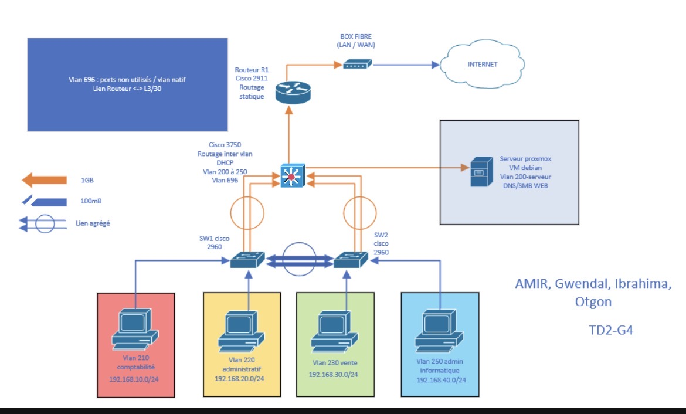
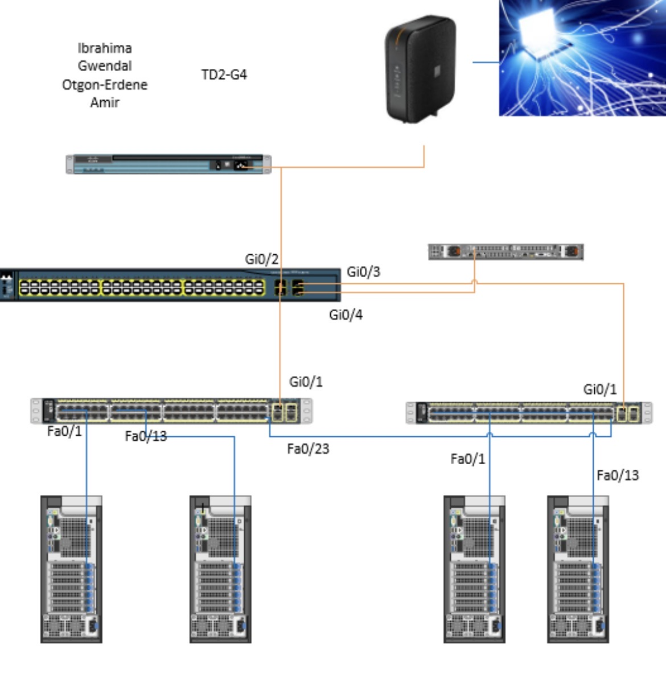

SAÉ 12 — Initialisation aux Réseaux Informatiques
Contexte & Objectifs
Durée : 3 semaines | Travail en équipe : Projet collaboratif
J'ai participé à la conception et à la mise en œuvre d'un prototype de réseau informatique pour l'entreprise fictive Fibre&Company, spécialisée dans le déploiement de la fibre optique. Cette entreprise disposait d'une infrastructure réseau ancienne, peu sécurisée et insuffisante pour ses besoins croissants. L'enjeu était de proposer une solution réseau performante, sécurisée et évolutive.
Activités Conduites
- Conception de l'architecture réseau : Étude de la topologie, identification des besoins en bande passante et en sécurité
- Plan d'adressage IP : Création d'une stratégie d'adressage par VLAN pour segmenter le réseau par domaine métier
- Configuration DHCP : Mise en place du service DHCP pour automatiser l'attribution des adresses IP
- Routage inter-VLAN : Configuration du routage pour permettre la communication entre les différents segments réseau
- Documentation : Rédaction de schémas logiques et physiques, documentation des configurations
Compétences Mobilisées
- Configuration des fonctions de base du réseau local
- Compréhension de l'architecture système et des OS
- Identification et résolution des dysfonctionnements réseau
- Installation et configuration de postes clients
- Documentation technique d'infrastructure
Tâches réalisées
- Configuration d’adresses IP: J’ai participé à la mise en place du plan d’adressage IP afin d’attribuer une plage d’adresses spécifique à chaque VLAN.
- Mise en place de services DHCP: J’ai configuré le service DHCP pour automatiser l’attribution des adresses IP sur les différents VLANs.
- Routage inter-vlan: Je me suis occupé du routage inter-VLAN afin de permettre la communication entre les différents VLANs du réseau.
- Documentation de l’architecture: J’ai participé à la rédaction de la documentation de l’architecture réseau, incluant les VLANs, l’adressage IP et les configurations principales.
Preuves

Le schéma logique nous a permis de visualiser clairement l’architecture du réseau ainsi que l’organisation des équipements. Il a facilité la compréhension de la segmentation en VLAN, du routage inter-VLAN et des connexions entre les différents services du réseau. Grâce à cette représentation, il a été plus simple d’identifier les échanges de données, les rôles des équipements et la structure globale de l’infrastructure réseau. Cependant, nous avions initialement oublié d’intégrer le VLAN 240 dédié à la supervision dans le schéma logique. Cette omission a finalement été corrigée lors de la phase de configuration, ce qui nous a permis d’assurer une meilleure gestion et supervision des équipements du réseau. .

Le schéma physique nous a permis de représenter les équipements réseau ainsi que leurs connexions matérielles. Il a facilité l’organisation de l’infrastructure et la mise en place du réseau.
Acquis de Compétences (AC)
- AC11.02 – Comprendre l'architecture et les fondements des systèmes numériques
- AC11.03 – Configurer les fonctions de base du réseau local
- AC11.04 – Maîtriser les principes fondamentaux des systèmes d'exploitation
- AC11.05 – Identifier les dysfonctionnements du réseau local
- AC11.06 – Installer un poste client et expliquer la procédure mise en place
Autoévaluation
Points forts : J'ai démontré une bonne compréhension de la segmentation réseau par VLAN et une capacité à configurer des services réseau critiques (DHCP, routage). Le travail en équipe m'a permis de clarifier mes idées et de produire une documentation professionnelle et exploitable.
Apprentissages clés : Cette SAÉ m'a permis de mieux comprendre le fonctionnement des réseaux informatiques en situation réelle. J'ai saisi l'importance cruciale d'une bonne architecture réseau pour la performance, la sécurité et la maintenabilité d'une infrastructure.
Difficultés rencontrées : La configuration du routage inter-VLAN a été complexe au départ. J'ai dû approfondir ma compréhension des protocoles de routage et des tables de routage pour surmonter cette difficulté.
Améliorations possibles : J'aurais pu intégrer davantage d'éléments de sécurité (ACL, segmentation des flux) et explorer les redondances (spanning-tree) pour rendre l'infrastructure plus robuste face aux pannes.
Compétence renforcée : AC11.03 – Configurer les fonctions de base du réseau local.